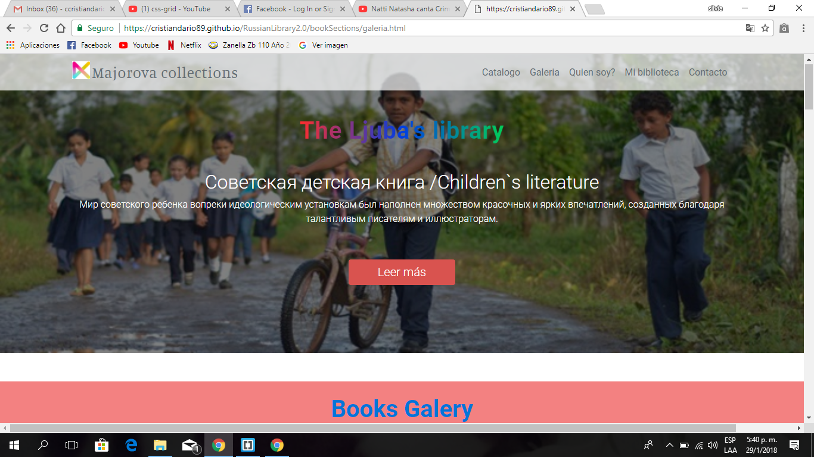

Extracto y Perfil de conocimiento
Estudiante de programacion en informatica apasionado por innovar y probar nuevos retos trabajando en distintos lenguages y tengo facilidad de adaptacion.
Cuento con gran destreza para la realizacion de consultas SQL.
Me caracteriza el poseer alta capacidad de análisis, asi como gran nivel de compromiso evidenciándose esto en verificar exhaustivamente la calidad de mi trabajo.
Habilidades Front-end:
- Diseño UX/UI y frontend(intermedio) y el backend(Modelado y desarrollo de base de datos).
- Plantilla HTML5: desarrollo semantico y SEO.
- Diseño Responsivo.
- Procesadores CSS: CSS3.
- de cliente/servidor, servidor solicita optimizaciones, plantillas segun el dispositivo.
Habilidades Back-end:
- Analisis y modelado de base de datos MySQL y Postgress.
- Optimizacion, configuracion y rendimiento de base de datos / Apache.
Educacion
Mar 2002-
Dic 2005
Dic 2005
Técnico en informática personal y profesional
Colegio Juan XXIII - Polimodal informática
Colegio Juan XXIII - Polimodal informática
Bachiller, modalidad produccion bienes y servicios
Colegio Juan XXIII - Polimodal informática
Colegio Juan XXIII - Polimodal informática
Habilidades
Maquetado web
Conocimientos teórico-practicos en: CSS HTML y JavaScript con libreria JQuery(fancybox, Thompson), Experiencia en el uso de Dreamweaver(CS6 y DW con Bootstrap) y Bootstrap.
Tecnologias del lado del servidor
Conocimientos en la interaccion y manipulacion de base de datos: Java, JSP, JSTL, Hibernate, Servlets, PHP.
Otros Conocimientos en:
C#, Ajax, XML, Python, Android.
Certificados de Inglés


Algunos trabajos graficos
Sitio web para Biblioteca Rusa

https://CristianDario89.github.io/Russian_books_Collection_by_Ljuba-/index.html
Learn English faster - Propuesta web
https://CristianDario89.github.io/EnglishWeb_forms_jsp/#
Sito web para Restaurant
https://cristiandario89.github.io/CSS_forRestaurant/index.html